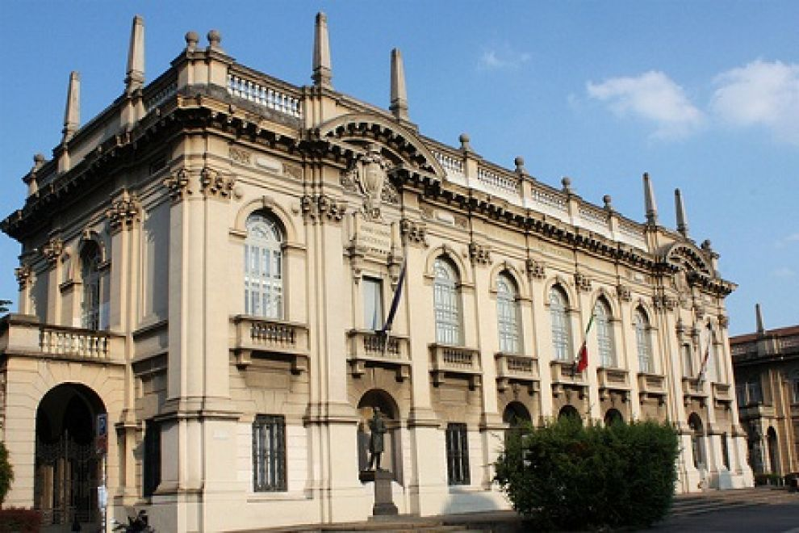

Venue
 The workshop will take place on April 18th, at the Politecnico Milano, Italy.Aula Castigliano, Building n. 5
Politecnico di Milano
Piazza Leonardo da Vinci 32
20133 Milano - Italy
https://goo.gl/maps/566ppMbqR3o
Travel
By Airplane
From Milano Linate Airport: take a taxi to the main building of Politecnico, piazza Leonardo da Vinci. About 15 minutes, 12-15 €.
From Milano Malpensa take the Malpensa Express train to Milano Centrale or Milano Cadorna, then take the subway line 2 (green line) as above, about 1h30m, or take a direct taxi ride to Politecnico, about 1h, 90 € fixed fare. There are also buses, but they can get stuck in traffic during rush hour. From Milano/Bergamo Orio al Serio (BGY) airport, home of low-cost flights, take a shuttle bus to Milano Centrale, then the subway line 2 etc.
By Train
From Milano Centrale Railway Station: take the subway line 2 (green line), direction Cologno/Gobba/Gessate. Subway stations are marked with a white M on red background. Get off the subway at Piola, leaving the subway station follow the crowd towards Politecnico. Get to the main entrance of the historical buildings in piazza Leonardo da Vinci and then follow the signposts towards Aula Castigliano, building 5.By Car
Parking around Politecnico is not easy and parking places inside Politecnico are reserved to employees. You may find free parking places in the streets towards the railway (via Ponzio, via Golgi, via Celoria, via Valvassori Peroni). Hotels usually have parking arrangements for a reasonable fee.Registration
The registration is now open. To register please fill out the following form: The confirmation Email will then contain the instructions for payment. The early registration fee for the EOOLT'2016 Workshop has been set to EUR 120.-, early registration is open until March 21 (late registration will cost EUR 150,-).Workshop Accomodation
Following you can find a list of the hotels Politecnico di Milano usually suggests.In order to book a room please contact directly the hotel mentioning your participation at the EOOLT2016 event organized at Politecnico di Milano.
Hotel SANPI ****
Via Lazzaro Palazzi 18, 20124 Milano (Central station zone)
Ph.: +39 02-29513341
Fax: +39 02-29402451
E-mail: info@hotelsanpimilano.it
http://www.hotelsanpimilano.it/
Hotel MEDIOLANUM ****
Via Mauro Macchi 1, 20124 Milano
Ph.: +39 02-6705312
Fax: +39 02-66981921
E-mail: info@mediolanumhotel.com
http://www.mediolanumhotel.it/
Hotel DIECI ****
L.go Rio de Janeiro 12, 20133 Milano
Ph.: +39 02-70608180
Fax: +39 02-26684206
E-mail: info@hoteldieci.it
http://www.hoteldieci.it/
Hotel MADISON – BEST WESTERN ****
Via Privata Leopoldo Gasparotto 8, 20124 Milano (close to the Central Station)
Ph.: +39 02-67074150
Fax: +39 02-67075059
E-mail: madison.mi@bestwestern.it
http://www.madisonhotelmilano.com/
Hotel GALLES – BEST WESTERN ****
Piazza Lima 2, 20124 Milano
Ph.: +39 02-204841
Fax: +39 02-2048422
E-mail: info@galles.it
http://www.galles.it/
Hotel PALAZZO DELLE STELLINE ***
Corso Magenta 61, 20123 Milano
Ph.: +39 02-4818431
Fax: +39 02-48519097 / +39 02-48194281
E-mail: info@hotelpalazzostelline.it
http://www.hotelpalazzostelline.it/
Hotel LOMBARDIA ***
Viale Lombardia 74/76, 20131 Milano
Ph.: +39 02-2824849
Fax: +39 02-2893430
E-mail: info@hotellombardia.com
http://www.hotellombardia.com/
Hotel GAMMA ***
Via Valvassori Peroni 85, 20133 Milano
Ph.: +39 02-26413152
Fax: +39 02-2640255
E-mail: info@hotelgammamilano.it
http://hotelgammamilano.it/
Hotel ALBERT ***
Via Tonale 2, 20125 Milano (close to the Central Station)
Ph.: +39 02-66985446
Fax: +39 02-66985624
E-mail: info@alberthotel.it
http://www.alberthotel.it/
Hotel OASI VILLAGE ***
Viale Lombardia 20, 20131 Milano
Ph.: +39 02-23951472
Fax: +39 02-70606666
E-mail: oasi@oasivillagehotel.it
http://www.oasivillagehotel.it/
Hotel TRENTINA **
Via Filippino Lippi 50, 20139 Milano
Ph.: +39 02-2361208 / +39 02-2361326
Fax: +39 02-2361297
email: info@htrentina.it
http://www.htrentina.it/
About Milano
Located in heart of the Po valley, Milano is the regional capital of Lombardia. Surpassed in size only by Roma, Milano is rightfully recognized as Italy’s richest and most industrialized city. Wealthy and cosmopolitan, it embraces tradition, enjoys sophistication and ambition in equal measure. Milano is the city ot the La Scala theatre, with the most famous opera prigram in the world. Among the many museums and exhibits, it is the home of Leonardo Da Vinci’s Last Supper, which miraculously survived World War II. Milano is also famous for its Navigli district, a network of canals that were used for navigation and irrigation purposes. These canals greatly boosted the trade between the north and south. The city’s enduring emblem is the gilded statue of the Virgin Mary, at the very top pf the stunning Cathedral (Il Duomo). The city’s road geometry is built around the historical center, as it radiatesout of the Cathedral, with a star-shaped network of arteries that spread through modern suburbs all the way to the ring-shaped freeway that surrounds it. Milano is the heart of Italian fashion and twice a year it becomes the capital of fashion, when it presents the spring and autumn collections. But Milano has carefully guarded its reputation also for flair, drama and creativity.